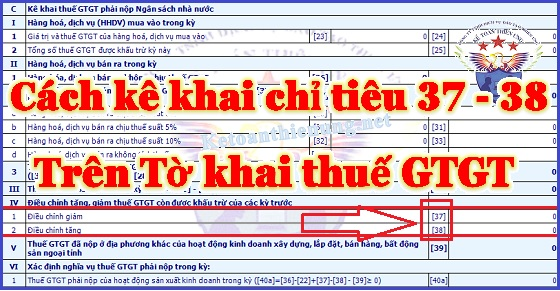
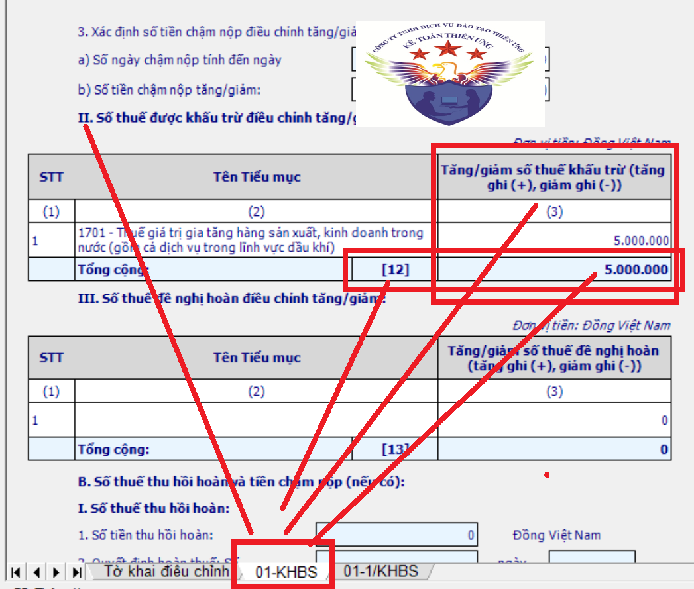
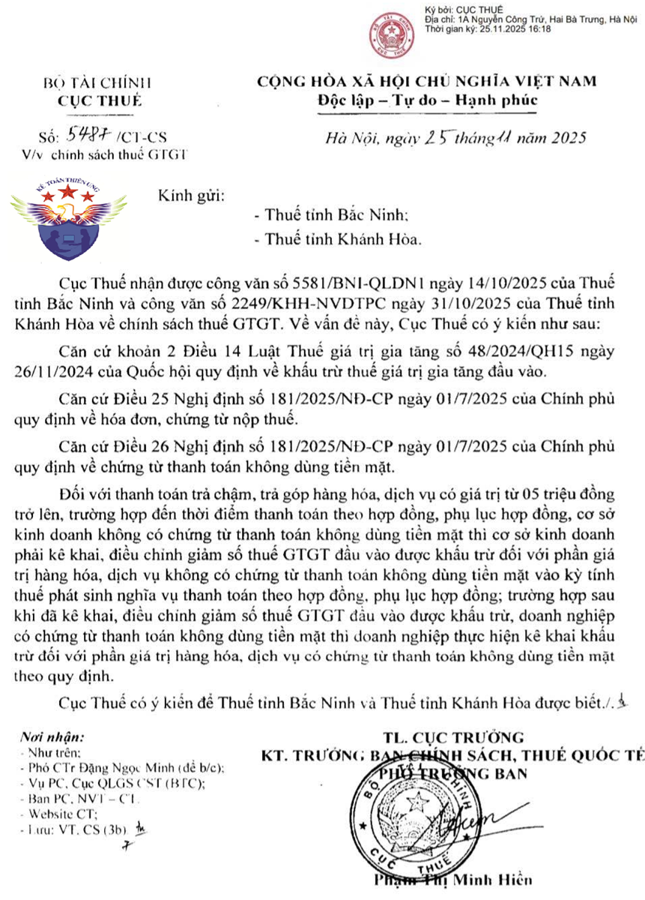

Chỉ tiêu 37 và 38 trên tờ khai thuế GTGT kê khai như nào? Khi nào kê khai chỉ tiêu 37 38 trên HTKK? Các trường hợp kê khai chỉ tiêu 37 38 trên tờ khai thuế 01/GTGT. Kế toán Diệu Tâm xin hướng dẫn kê khai Chỉ tiêu 37 và 38.

----------------------------------------------------------------------------------------
- Chỉ tiêu 37: điều chỉnh giảm Thuế GTGT còn được khấu trừ của các kỳ trước
- Chỉ tiêu 38: điều chỉnh tăng Thuế GTGT còn được khấu trừ của các kỳ trước
=> Chỉ tiêu 37 và chỉ tiêu 38 thuộc Phần IV. Điều chỉnh tăng, giảm thuế giá trị gia tăng còn được khấu trừ của các kỳ trước trên tờ khai thuế GTGT 01/GTGT
(Lưu ý: đây là 2 chỉ tiêu dùng để điều chỉnh tăng/giảm ĐẦU VÀO => Không dùng để điều chỉnh tăng/giảm đầu ra)
Chỉ tiêu 37 và 38 dùng để kê khai trong các trường hợp:
+ Trường hợp 1: Điều chỉnh tăng/giảm số thuế GTGT còn được khấu trừ theo TỜ KHAI BỔ SUNG (01/KHBS)Khi doanh nghiệp làm điều chỉnh bổ sung KHBS cho tờ khai thuế GTGT của các kỳ trước mà ra kết quả tại chỉ tiêu số 12 trong mục II trên TỜ KHAI BỔ SUNG (01/KHBS) thì đưa kết quả tại chỉ tiêu 12 này vào chỉ tiêu 37 hoặc 38 của kỳ hiện tại (Kết quả dương thì đưa vào chỉ tiêu 38 để điều chỉnh tăng, kết quả âm thì đưa vào chỉ tiêu 37 để điều chỉnh giảm)
Vì theo khoản 4 Điều 7 Nghị định số 126/2020/NĐ-CP ngày 19/10/2020 của Chính phủ quy định về khai bổ sung hồ sơ khai thuế thì:
Trường hợp khai bổ sung chỉ làm tăng hoặc giảm số thuế giá trị gia tăng còn được khấu trừ chuyển kỳ sau thì phải kê khai vào kỳ tính thuế hiện tại.
Nên khi làm tờ khai điều chỉnh bổ sung mà ra kết quả tại chỉ tiêu số 12 trong mục II trên TỜ KHAI BỔ SUNG (01/KHBS) này thì phải kê khai số tiền phát sinh tại chỉ tiêu số 12 này vào kỳ hiện tại (Kỳ thực hiện làm tờ khai điều chỉnh bổ sung KHBS.Ví dụ: Qúy 4/2025 phát hiện ra tờ khai thuế GTGT của quý 1/2025 bị sai => Qúy 4/2025 sẽ làm tờ khai điều chỉnh bổ sung cho tờ khai quý 1/2025 bị sai đó => Kỳ hiện tại là kỳ quý 4/2025)
| Hình ảnh minh họa cho chỉ tiêu 12 trong mục II trên Tờ khai bổ sung 01/KHBS khi làm tờ khai điều chỉnh bổ sung tờ khai thuế GTGT: |
|
 |
|
=> Kết quả tại chỉ tiêu số 12 mà ra dương (không có ngoặc đơn) -> đưa số tiền này vào chỉ tiêu 38 của kỳ hiện tại (kỳ thực hiện làm tờ khai điều chỉnh bổ sung) (Trong ảnh trên là đang dương 5 triệu => đưa 5 triệu này vào chỉ tiêu 38 của kỳ hiện tại là kỳ quý 4/2025) |
+ Trường hợp 2: Điều chỉnh tăng/giảm số thuế GTGT còn được khấu trừ theo kết luận, quyết định của CQT hoặc cơ quan có thẩm quyền
Trường hợp cơ quan thuế, cơ quan có thẩm quyền đã ban hành kết luận, quyết định xử lý về thuế có điều chỉnh tương ứng các kỳ tính thuế trước thì khai vào hồ sơ khai thuế của kỳ tính thuế nhận được kết luận, quyết định xử lý về thuế (không phải khai bổ sung hồ sơ khai thuế).
| Đối với trường hợp mua hàng trả chậm trả góp mà hóa đơn có giá trị từ 5 triệu đồng trở lên | |||||||||||||||||||||||||||||||||||||||||||||
|
Theo quy định tại điểm g, khoản 2, điều 26 của Nghị định 181/2025/NĐ-CP hướng dẫn Luật Thuế giá trị gia tăng có hiệu lực từ ngày 01/7/2025 thì:
g) Đối với hàng hóa, dịch vụ mua trả chậm, trả góp có giá trị hàng hóa, dịch vụ mua từ 05 triệu đồng trở lên, cơ sở kinh doanh căn cứ vào hợp đồng mua hàng hóa, dịch vụ bằng văn bản, hóa đơn giá trị gia tăng và chứng từ thanh toán không dùng tiền mặt của hàng hóa, dịch vụ mua trả chậm, trả góp để khấu trừ thuế giá trị gia tăng đầu vào. Trường hợp chưa có chứng từ thanh toán không dùng tiền mặt do chưa đến thời điểm thanh toán theo hợp đồng, phụ lục hợp đồng thì cơ sở kinh doanh vẫn được khấu trừ thuế giá trị gia tăng đầu vào. Trường hợp đến thời điểm thanh toán theo hợp đồng, phụ lục hợp đồng, cơ sở kinh doanh không có chứng từ thanh toán không dùng tiền mặt thì cơ sở kinh doanh phải kê khai, điều chỉnh giảm số thuế giá trị gia tăng đầu vào được khấu trừ đối với phần giá trị hàng hóa, dịch vụ không có chứng từ thanh toán không dùng tiền mặt vào kỳ tính thuế phát sinh nghĩa vụ thanh toán theo hợp đồng, phụ lục hợp đồng.
|
|||||||||||||||||||||||||||||||||||||||||||||
|
Ngày 25/11/2025, Cục Thuế đã có Công văn 5487/CT-CS quá hạn thanh toán thì vẫn được khấu trừ thuế GTGT khi có chứng từ thanh toán không dùng tiền mặt sau khi điều chỉnh giảm  |
|||||||||||||||||||||||||||||||||||||||||||||
|
Vậy là: đối với hàng hóa, dịch vụ trị giá từ 5 triệu đồng trở lên theo hình thức trả chậm/trả góp:
+ Đến kỳ phải thanh toán, nếu không có chứng từ thanh toán không dùng tiền mặt, doanh nghiệp phải tự điều chỉnh giảm số thuế GTGT đầu vào tương ứng phần giá trị chưa có chứng từ thanh toán không tiền mặt đó.
+ Sau này nếu bổ sung được chứng từ thanh toán không dùng tiền mặt, doanh nghiệp được kê khai khấu trừ lại phần thuế GTGT đầu vào tương ứng.
|
|||||||||||||||||||||||||||||||||||||||||||||
|
|||||||||||||||||||||||||||||||||||||||||||||
-----------------------------------------------------------------------------------------------------
Kế toán Diệu Tâm xin chúc các bạn thành công!
-------------------------------------------------------------------------------------------------------